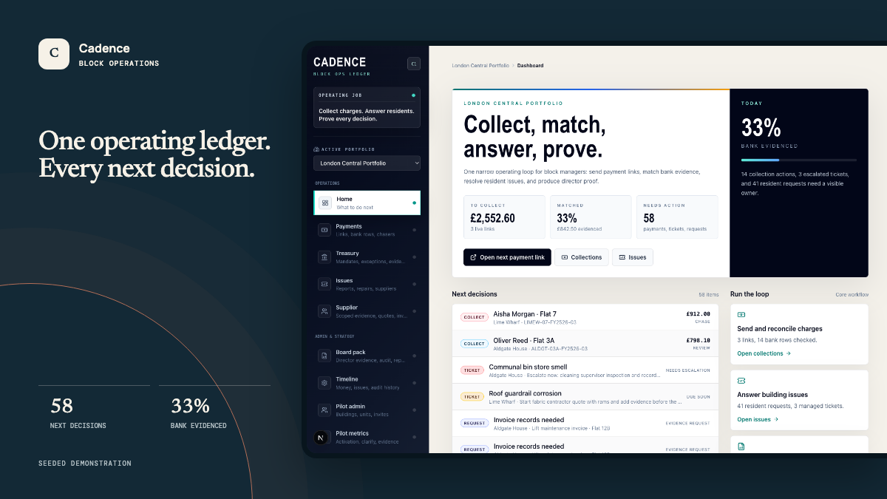

Live seeded demoPrivate core
Block operations
Cadence
A service-charge operating ledger that connects collections, resident issues and board evidence instead of leaving the work scattered across inboxes.
- Seeded workspace
- Role-based views
- Commercial pilot